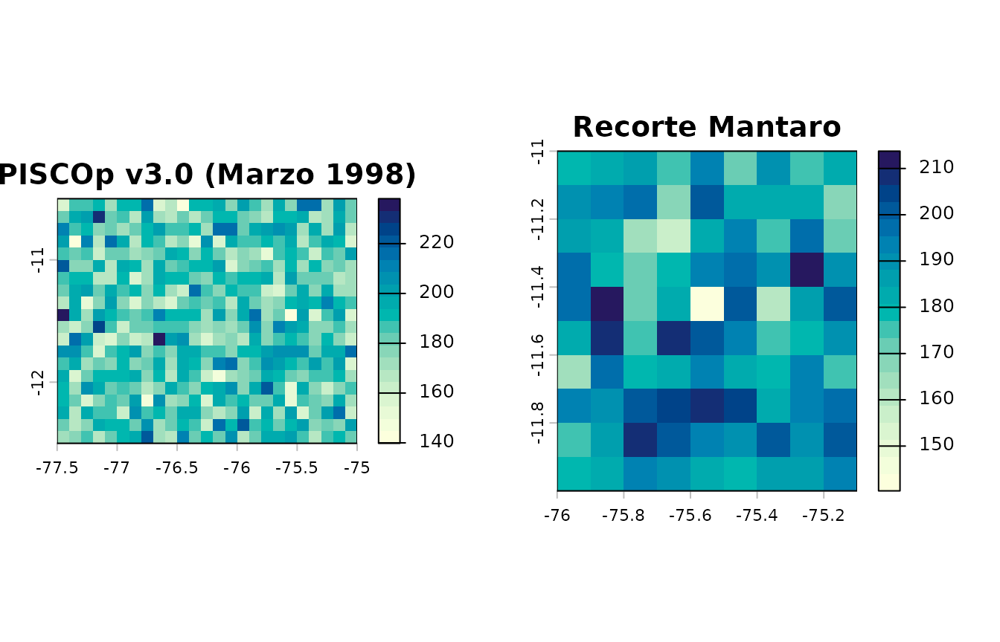
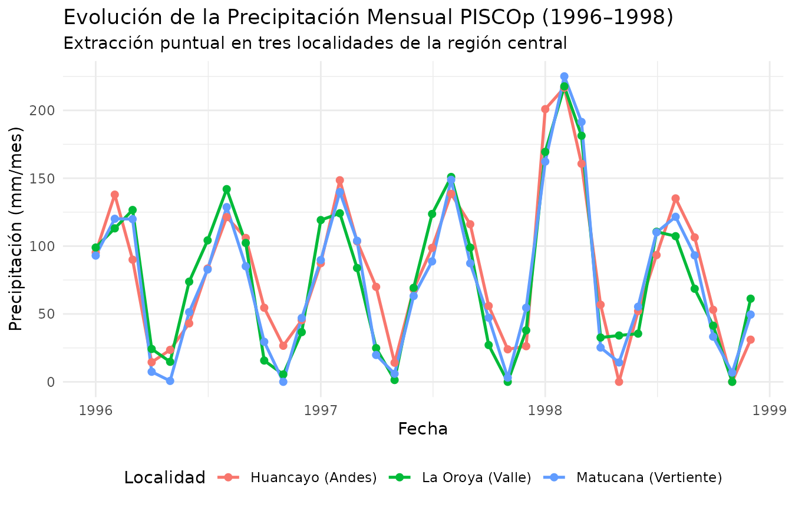
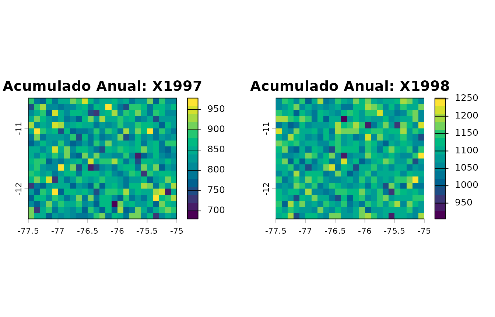
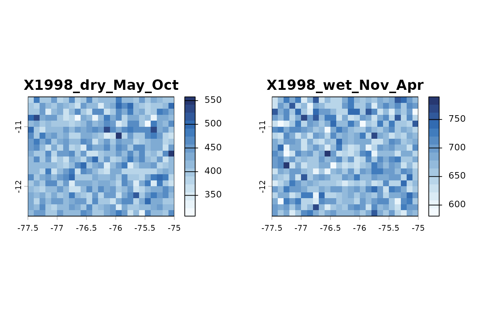
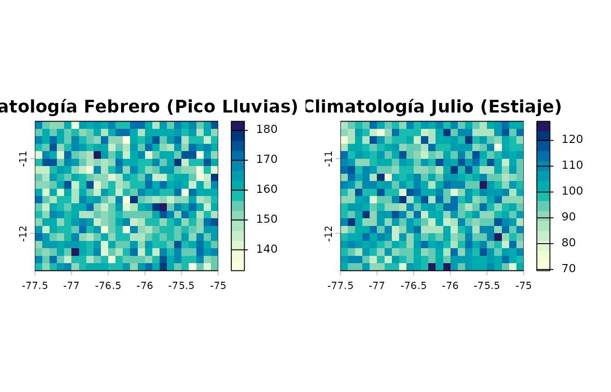
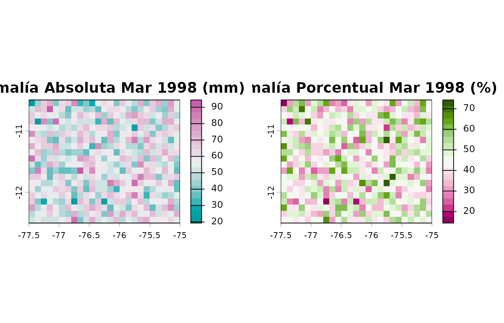

2. Análisis Climático: Recortes, Agregaciones Temporales y Anomalías
Source:vignettes/climate-analytics.Rmd
climate-analytics.RmdIntroducción
Las grillas climáticas de alta resolución de PISCO (resolución espacial de 0.10° ≈ 10 km) permiten caracterizar la variabilidad hidrometeorológica a escala regional y local en el Perú.
En esta viñeta se demuestra el flujo de trabajo para: 1. Recorte
espacial con cajas delimitadoras y geometrías vectoriales
(pisco_clip). 2. Extracción de series temporales puntuales
en formato ordenado (tidy tibble) (pisco_extract).
3. Agregaciones temporales mensuales, anuales y estacionales del SENAMHI
(pisco_aggregate). 4. Cálculo de anomalías absolutas y
porcentuales (pisco_anomaly).
1. Creación de una Grilla Espaciotemporal Representativa
Para que los ejemplos de esta viñeta sean completamente reproducibles y de ejecución inmediata e independiente de descargas de gran volumen, simulamos una grilla representativa de precipitación mensual PISCOp v3.0 (0.10° de resolución) centrada en la región andino-costera central del Perú (cuencas de los ríos Mantaro y Rímac) durante el período 1996–1998, que incluye el evento extremo de El Niño 1997–1998:
# Definir dominio espacial (Centro del Perú: Andes Centrales y Costa)
# xmin: -77.5°, xmax: -75.0°, ymin: -12.5°, ymax: -10.5°
nx <- 25
ny <- 20
r_base <- terra::rast(
xmin = -77.5, xmax = -75.0,
ymin = -12.5, ymax = -10.5,
resolution = 0.10,
crs = "EPSG:4326"
)
# Generar 36 meses (1996-01 a 1998-12)
fechas <- seq(as.Date("1996-01-01"), by = "month", length.out = 36)
set.seed(42)
# Simular precipitación mensual con ciclo andino (lluvias en verano DEF, estiaje en invierno JJA)
capas <- lapply(seq_along(fechas), function(i) {
mes <- as.integer(format(fechas[i], "%m"))
anio <- as.integer(format(fechas[i], "%Y"))
# Ciclo estacional andino típico (pico en febrero-marzo, mínimo en junio-julio)
amplitud_mes <- 120 * sin((mes + 1) * pi / 6)^2 + 10
# Anomalía positiva durante el evento El Niño 1997-1998 en la vertiente occidental
anom_nino <- if (anio == 1998 && mes %in% c(1, 2, 3)) 85 else 0
mat <- matrix(
pmax(0, rnorm(terra::ncell(r_base), mean = amplitud_mes + anom_nino, sd = 15)),
nrow = terra::nrow(r_base),
ncol = terra::ncol(r_base)
)
r_lyr <- r_base
terra::values(r_lyr) <- mat
r_lyr
})
r_pisco <- terra::rast(capas)
terra::time(r_pisco) <- fechas
names(r_pisco) <- paste0("PISCOp_", format(fechas, "%Y_%m"))
terra::units(r_pisco) <- "mm/month"
r_pisco
#> class : SpatRaster
#> size : 20, 25, 36 (nrow, ncol, nlyr)
#> resolution : 0.1, 0.1 (x, y)
#> extent : -77.5, -75, -12.5, -10.5 (xmin, xmax, ymin, ymax)
#> coord. ref. : lon/lat WGS 84 (EPSG:4326)
#> source(s) : memory
#> names : PISCO~96_01, PISCO~96_02, PISCO~96_03, PISCO~96_04, PISCO~96_05, PISCO~96_06, ...
#> min values : 55.103649, 79.423914, 56.072842, 0.795348, 0, 0, ...
#> max values : 144.487981, 182.429564, 139.505643, 93.769892, 62.063644, 82.919792, ...
#> unit : mm/month
#> time (days) : 1996-01-01 to 1998-12-01 (36 steps)2. Recorte Espacial con pisco_clip()
La función pisco_clip() permite recortar grillas
utilizando múltiples formatos de entrada: vectores numéricos con
coordenadas límite, objetos sf (polígonos o cajas
delimitadoras) o extensiones terra::ext.
# 1. Recorte con vector de coordenadas c(xmin, ymin, xmax, ymax)
# Sub-área de la Cuenca Alta del Mantaro
bbox_mantaro <- c(-76.0, -12.0, -75.1, -11.0)
r_mantaro <- pisco_clip(r_pisco, mask = bbox_mantaro)
terra::ext(r_mantaro)
#> SpatExtent : -76, -75.099999999999994, -12, -11 (xmin, xmax, ymin, ymax)
terra::ncell(r_mantaro)
#> [1] 90
# 2. Recorte utilizando un objeto espacial sf
poligono_sf <- sf::st_as_sfc(
sf::st_bbox(c(xmin = -76.8, ymin = -11.8, xmax = -75.8, ymax = -10.8), crs = sf::st_crs(4326))
)
r_subsf <- pisco_clip(r_pisco, mask = poligono_sf)
terra::ext(r_subsf)
#> SpatExtent : -76.800000000000011, -75.800000000000011, -11.800000000000001, -10.800000000000001 (xmin, xmax, ymin, ymax)Visualicemos la precipitación acumulada en el mes de marzo de 1998 (pleno Fenómeno El Niño) en la grilla original y en la zona recortada:
par(mfrow = c(1, 2), mar = c(3, 3, 2, 1))
terra::plot(r_pisco[["PISCOp_1998_03"]], main = "PISCOp v3.0 (Marzo 1998)", col = hcl.colors(20, "YlGnBu", rev = TRUE))
terra::plot(r_mantaro[["PISCOp_1998_03"]], main = "Recorte Mantaro", col = hcl.colors(20, "YlGnBu", rev = TRUE))
3. Extracción Puntual de Series Temporales con
pisco_extract()
Para evaluar el comportamiento de la precipitación en puntos de
interés (estaciones meteorológicas, ciudades o proyectos de
infraestructura), pisco_extract() extrae series de tiempo y
las organiza en un tidy tibble:
# Coordenadas geográficas de ciudades en el área de estudio
puntos_interes <- data.frame(
nombre = c("Huancayo (Andes)", "La Oroya (Valle)", "Matucana (Vertiente)"),
lon = c(-75.21, -75.92, -76.38),
lat = c(-12.07, -11.52, -11.84)
)
# Extracción puntual indicando la columna identificadora id_col
serie_ciudades <- pisco_extract(r_pisco, points = puntos_interes, id_col = "nombre")
head(serie_ciudades)
#> # A tibble: 6 × 5
#> id lon lat date precipitation
#> <chr> <dbl> <dbl> <date> <dbl>
#> 1 Huancayo (Andes) -75.2 -12.1 1996-01-01 95.2
#> 2 Huancayo (Andes) -75.2 -12.1 1996-02-01 138.
#> 3 Huancayo (Andes) -75.2 -12.1 1996-03-01 90.0
#> 4 Huancayo (Andes) -75.2 -12.1 1996-04-01 14.5
#> 5 Huancayo (Andes) -75.2 -12.1 1996-05-01 23.5
#> 6 Huancayo (Andes) -75.2 -12.1 1996-06-01 43.1Visualización Temporal con ggplot2
ggplot(serie_ciudades, aes(x = date, y = precipitation, color = id)) +
geom_line(linewidth = 0.9) +
geom_point(size = 1.8) +
labs(
title = "Evolución de la Precipitación Mensual PISCOp (1996–1998)",
subtitle = "Extracción puntual en tres localidades de la región central",
x = "Fecha",
y = "Precipitación (mm/mes)",
color = "Localidad"
) +
theme_minimal() +
theme(legend.position = "bottom")
4. Agregación Temporal con pisco_aggregate()
pisco_aggregate() realiza agregaciones temporales
automáticas a partir de los atributos de fecha de la grilla.
Agregación Anual
Suma la precipitación acumulada por año calendario:
r_anual <- pisco_aggregate(r_pisco, by = "year", fun = "sum")
names(r_anual)
#> [1] "X1996" "X1997" "X1998"
# Precipitación anual del año 1997 vs 1998
par(mfrow = c(1, 2))
terra::plot(r_anual[[2]], main = paste("Acumulado Anual:", names(r_anual)[2]), col = hcl.colors(15, "Viridis"))
terra::plot(r_anual[[3]], main = paste("Acumulado Anual:", names(r_anual)[3]), col = hcl.colors(15, "Viridis"))
Agregación Estacional según Criterio Oficial del SENAMHI
En climatología e hidrología peruana (Gutierrez &
Lavado-Casimiro, 2025), el SENAMHI define dos temporadas
hidrológicas oficiales: - Temporada húmeda / lluvias
(wet_Nov_Apr): Noviembre a Abril. Los meses de
noviembre y diciembre se asocian al año hidrológico que culmina en el
año siguiente. - Temporada seca / estiaje
(dry_May_Oct): Mayo a Octubre.
# Agregación estacional oficial del SENAMHI
r_estacional <- pisco_aggregate(r_pisco, by = "season_senamhi", fun = "sum")
names(r_estacional)
#> [1] "X1996_wet_Nov_Apr" "X1996_dry_May_Oct" "X1997_wet_Nov_Apr"
#> [4] "X1997_dry_May_Oct" "X1998_wet_Nov_Apr" "X1998_dry_May_Oct"
#> [7] "X1999_wet_Nov_Apr"
# Gráfico de la temporada de lluvias (wet) vs estiaje (dry) para el año hidrológico 1998
par(mfrow = c(1, 2))
nombres_sel <- grep("1998", names(r_estacional), value = TRUE)
terra::plot(r_estacional[[nombres_sel[2]]], main = nombres_sel[2], col = hcl.colors(15, "Blues", rev = TRUE))
terra::plot(r_estacional[[nombres_sel[1]]], main = nombres_sel[1], col = hcl.colors(15, "Blues", rev = TRUE))
Ciclo Anual Medio Multianual (Climatología Mensual)
También es posible obtener las normales mensuales medias (12 capas, Enero a Diciembre):
r_ciclo <- pisco_aggregate(r_pisco, by = "month", fun = "mean")
names(r_ciclo)
#> [1] "Jan" "Feb" "Mar" "Apr" "May" "Jun" "Jul" "Aug" "Sep" "Oct" "Nov" "Dec"
par(mfrow = c(1, 2))
terra::plot(r_ciclo[["Feb"]], main = "Climatología Febrero (Pico Lluvias)", col = hcl.colors(15, "YlGnBu", rev = TRUE))
terra::plot(r_ciclo[["Jul"]], main = "Climatología Julio (Estiaje)", col = hcl.colors(15, "YlGnBu", rev = TRUE))
5. Cálculo de Anomalías Espaciotemporales con
pisco_anomaly()
El cálculo de anomalías hidroclimáticas es fundamental para el monitoreo de sequías e inundaciones:
-
Anomalía absoluta
(
type = "difference"): (en unidades de la variable, ej. mm/mes). -
Anomalía porcentual
(
type = "percent"): (en %).
# 1. Utilizar el ciclo climatológico medio multianual de 12 meses como línea base
linea_base <- r_ciclo
# 2. Anomalía absoluta para el mes crítico de Marzo 1998 (El Niño)
anom_abs <- pisco_anomaly(r_pisco[["PISCOp_1998_03"]], baseline = linea_base, type = "difference")
# 3. Anomalía porcentual (%) para el mismo mes
anom_pct <- pisco_anomaly(r_pisco[["PISCOp_1998_03"]], baseline = linea_base, type = "percent")Visualización de las anomalías:
par(mfrow = c(1, 2))
terra::plot(anom_abs, main = "Anomalía Absoluta Mar 1998 (mm)", col = hcl.colors(20, "Tropic"))
terra::plot(anom_pct, main = "Anomalía Porcentual Mar 1998 (%)", col = hcl.colors(20, "PiYG"))
En la siguiente viñeta se muestra cómo integrar estos análisis con polígonos de cuencas hidrológicas y redes fluviales utilizando los productos PISCO_HyM.